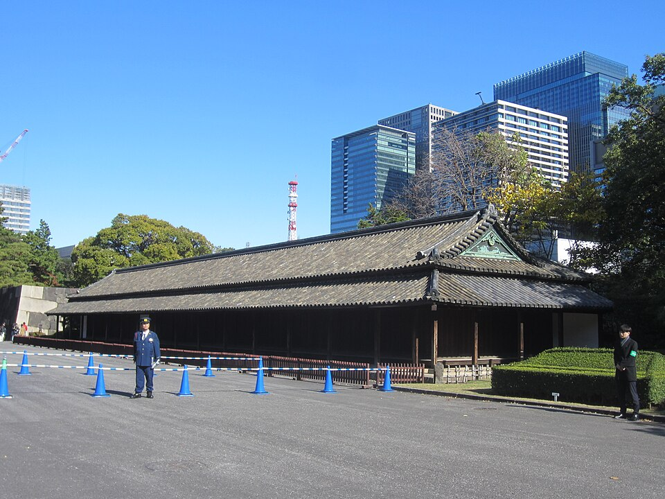

Среда: пешком к замку Edo → музей землетрясения 1923 → закат на мосту Ryogoku
Вчерашний закат был на мосту Azuma (Asakusa). Ryogoku - второй мост на той же реке, ~2 км ниже, рядом с музеем.
Отель → ворота Otemon пешком
1) От отеля на главную улицу Chuo-dori и на юг к реке Kanda, мост Manseibashi (~5 мин). 2) За мостом направо по улице Sotobori-dori до станции метро Awajicho (~5 мин). 3) Налево, на юг ~1 км через квартал Kanda к небоскрёбам Otemachi (~13 мин). 4) В Otemachi направо, на запад к рву: ворота Otemon за мостиком через ров (~8 мин). Навигатор - по кнопке. Если не хочется идти: JR до Tokyo 4 мин + 10 мин пешком.
Восточный сад = замок Edo
Ворота Otemon (на входе жетон, на выходе отдаёшь) → караульня Hyakunin-bansho → лужайка Honmaru, где стоял дворец сёгуна → Tenshudai: основание главной башни (1607, самая большая башня замка в Японии, сгорела в 1657) → сад Ninomaru с прудом. Выход обратно через Otemon.





Сад → Tokyo Station → Ryogoku
От Otemon ~12 мин пешком к выходу Marunouchi North вокзала Tokyo. Зелёная Yamanote, платформа 4, на Ueno / Ikebukuro, 2 остановки: Kanda, Akihabara. Там жёлтая Sobu, платформа 6, на Chiba (千葉), 2 остановки: Asakusabashi, Ryogoku (поезд 15:34 → 15:48 по Yahoo). Выход West (西口), ~11 мин пешком на север мимо зала сумо.
Музей землетрясения 1923 года (Fukko Kinenkan)
Небольшой: одно двухэтажное здание, ~1 200 м² (ja Wikipedia), 30-45 минут хватит (моя оценка). Внизу вещи, уцелевшие после катастрофы, и макеты восстановленного города; наверху картины пожара и зал о бомбардировках Tokyo 1944-1945; во дворе расплавленные огнём части зданий и машин. Здание 1931 года спроектировал Itō Chūta. Здесь 1 сентября 1923 года люди спасались от пожара с вещами, огонь перекинулся по вещам, огненный вихрь убил до 44 000 человек (Wikipedia).
Часы по справочным сайтам, официальный сайт не открылся.


Закат на мосту Ryogoku
~17 мин пешком от музея к реке Sumida. Этот вид Hokusai нарисовал в серии «36 видов Фудзи». Ужин в Ryogoku: chanko-nabe, рагу борцов сумо.


Домой
С моста до отеля ~2 км пешком. Или JR Ryogoku: жёлтая Sobu, платформа 1, на Nakano / Mitaka, 2 остановки до Akihabara.
Что сегодня не влезло
Площадь у дворца и мост Nijubashi (10-15 мин от Otemon) - можно в четверг или пятницу утром. Edo-Tokyo Museum в Ryogoku (до 17:30) - тоже на другой день. Парк Ueno и пруд Shinobazu при солнце - четверг.